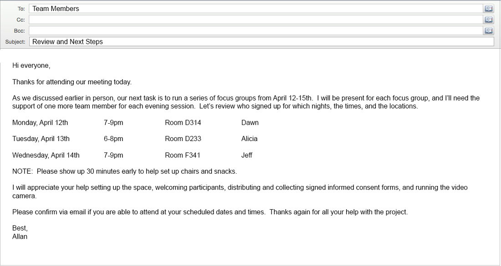

Some of you may be asked to oversee the work of volunteers during your time as a research assistant. This is very important: volunteers need to be thanked. One wise volunteer coordinator recommends thanking a volunteer fives times (and one of those times should occur in a public setting).
Source: Rawpixel.com/Shutterstock.com
That might sound like a lot of times to say thank you, but think about all the opportunities that may present themselves:
- as soon as a volunteer shows up (thanks so much for showing up),
- during their time actively volunteering (thanks so much for staffing this info poster. I can tell people are really getting a grasp of the project we're doing!),
- as they are leaving (thanks again for coming tonight. We couldn't have done it without you),
- the next day in a follow up email (thanks to all the volunteers who pitched in last night. Your contributions were so valuable), and finally,
- there may be an opportunity to thank your volunteers again, publically and in writing, somewhere in the final report of the research project.
In other research assistant positions, you might be responsible for managing other paid research assistants. While other paid assistants also appreciate being thanked, your role will also include delegating responsibilities, following up on those responsibilities, and holding people accountable when their commitments to the project are not met. This last job is daunting for many people, but it is important nevertheless.
Project management expert Stanley Portny has a few suggestions for managing people and their work. He recommends making people accountable to the entire team. This way, their successes (and their negligence) can be shared publically. It is also a good idea to follow up with an agreement in writing, possibly by email. Be as clear and as specific as possible. Below, you'll find an example of an email you might send. Note that all the details are clear, and that the email functions as a prompt follow up to an in-person meeting. Note also that the sender requests that the receivers email back confirming their understanding of what is expected of them.
In spite of our best teamwork efforts, sometimes things go awry. This next section will help you refine your conflict resolution skills.